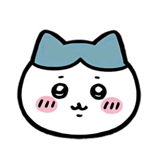
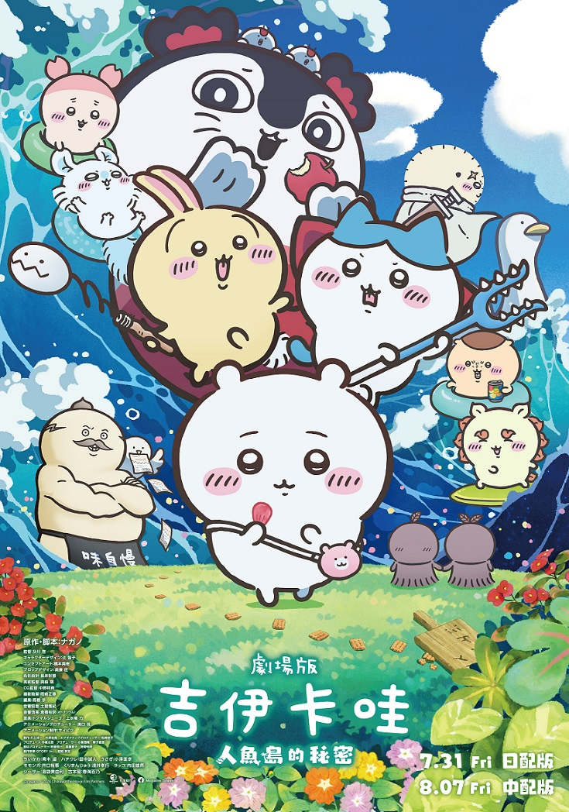
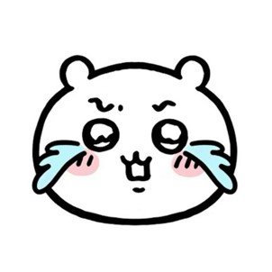
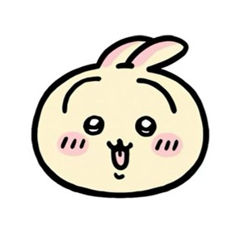
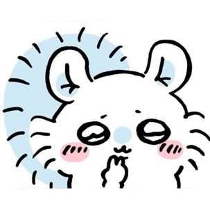
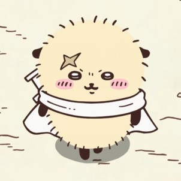
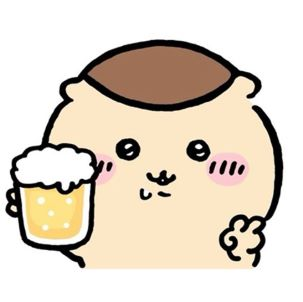
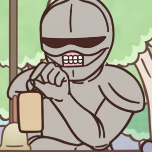

小八
以貓為設計靈感
擅長說話，個性樂觀開朗的他，極佳的社交能力。

吉伊卡哇、小八貓與兔兔在廣場休息時，兔兔臉上貼著一張「特別島嶼邀請函」傳單。傳單標榜在島上完成簡單討伐就能獲得 100倍報酬，且島上的拉麵與甜點全部實質免費，被誘惑的眾人便跟著海獺師傅一同前往該島合宿。然而，這場看似歡樂的度假冒險背後，卻隱藏著關於人魚傳說與沈重代價的殘酷真相。
吉伊卡哇是一支由環繞在小八貓、烏薩奇、吉伊卡哇、小桃、海獺勇者、栗子饅頭及鎧甲先生等主要角色組成。

以貓為設計靈感
擅長說話，個性樂觀開朗的他，極佳的社交能力。

以內向的小白鼠為設計靈感
I人的代表，總是發出「哇」或「咿」的聲音，雖然有時會因為害怕而掉眼淚，但在夥伴的支持下，總能勇敢面對挑戰。

以兔子為原型的角色
個性活潑好動，總是充滿了無窮的活力，堪稱是「頭腦代表」，不僅聰明還能快速作出決策。

以任性又可愛的飛鼠為原型的角色
總是想盡辦法吸引關注，希望獲得更多的讚美，難搞愛搗蛋，可以說是讓人又愛又恨。

以海獺為原型的角色
最強的討伐者，長期位居討伐第一名的他，大家都充滿了崇拜之情，吉伊卡哇與小八甚至稱他為師傅，而海獺勇者也經常帶著他們一起出遊，以及指導他們如何討伐，在這樣勇敢強大的形象下，海獺勇者其實有一個超級反差萌的愛好，那就是吃甜品！

以栗子饅頭為原型的角色
行為舉止像個大叔，喜歡請後輩們吃美食，還會在他們需要的時候提供幫助，喝酒時還會發出「哈~~」的聲音，但內心卻非常溫暖。

以機器人為原型的角色
鎧甲先生們是吉伊卡哇世界中的管理階層角色，他們負責分配工作並支持居民的生活。
《吉伊卡哇》首部劇場版動畫《劇場版吉伊卡哇：人魚島的秘密》（日語：映画ちいかわ人魚の島のひみつ）已於 2026年12月12日 在台灣正式上映。
上映日期
2026/12/12